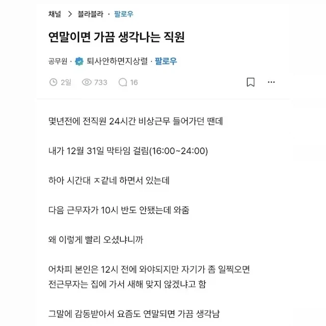

36 · 9 · 22 분 전 · 원문

수집 당시 댓글 9개
어리석은중생 · 18 시간 전
글쓴놈 지상렬이네
부엉맨 · 9 시간 전
공무원인데? 놀랍다
SQ · 3 시간 전
개드립잼썽 · 25 분 전
저러면 나도 다음에 빨리 가줌
오죽이 · 23 분 전
그럼 새해지나는거 같이 볼까요?
↳ 답글 · 으으으으으으그 · 19 분 전
??? : 신고할게요
듭다 · 17 분 전
멋있다
지옥의코만두 · 7 분 전
아! 근데 오늘교대는 12시에 할게요
↳ 답글 · dd2d · 4 분 전
글쓴놈 지상렬이네